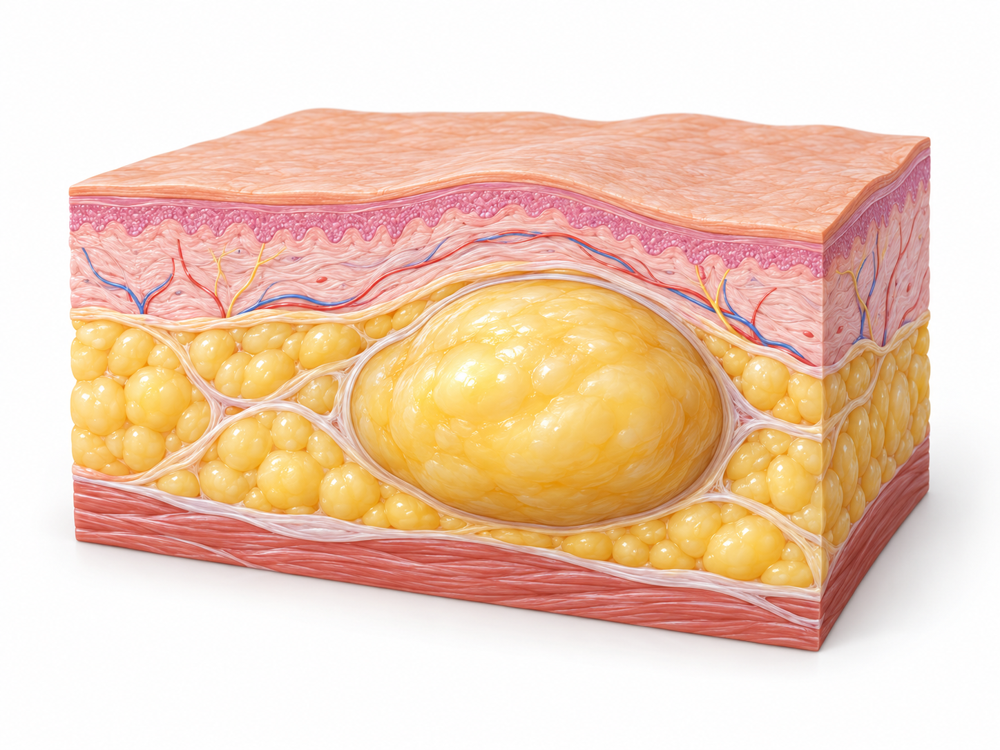

양성종괴란?
피부나 피하조직, 근육과 신경 주변 등에 발생하는 비암성 덩어리를 양성종괴라고 합니다.
천천히 자라고 통증이 없는 경우가 많지만 크기가 커지거나 주변 조직을 압박하면 통증, 저림, 움직임 제한이 나타날 수 있습니다.
피부 아래에 생긴 종괴는 종류와 발생 위치가 다양하므로
주변 신경·혈관과의 관계를 확인하는 과정이 필요합니다.

피부나 피하조직, 근육과 신경 주변 등에 발생하는 비암성 덩어리를 양성종괴라고 합니다.
천천히 자라고 통증이 없는 경우가 많지만 크기가 커지거나 주변 조직을 압박하면 통증, 저림, 움직임 제한이 나타날 수 있습니다.

작은 종괴도 발생 위치에 따라
세심한 검사와 제거 계획이 필요합니다.
종괴가 점차 커지거나 통증·저림, 반복되는 염증으로 불편함이 이어진다면
검사를 통해 상태를 확인하고 제거 여부를 고려할 수 있습니다.
상처는 청결히 관리하고 당김·압박은 피하세요.
붉어짐·열감·분비물·통증 악화 시 즉시 진료받으세요.